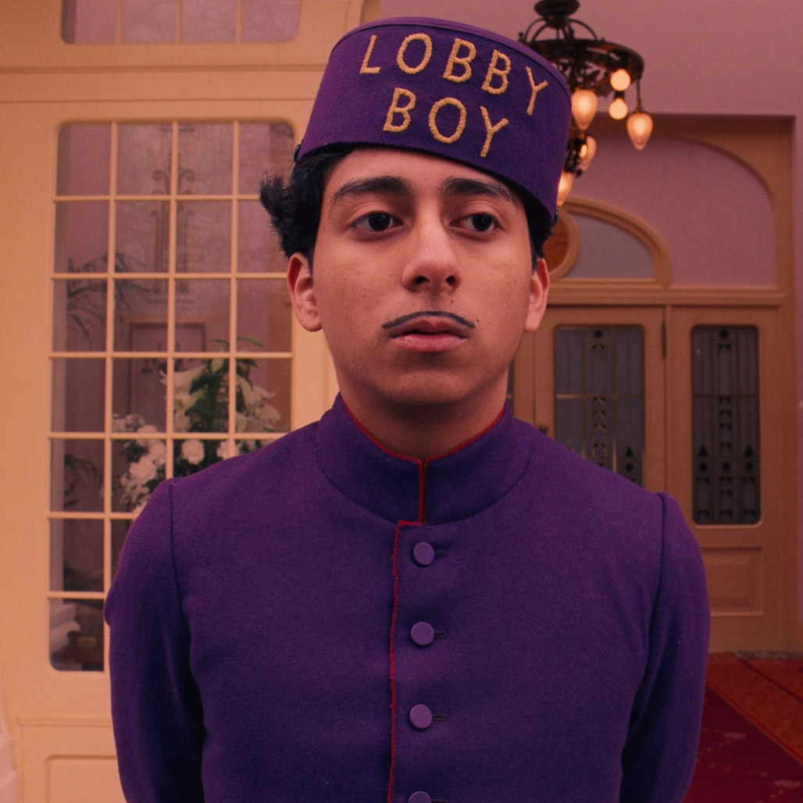

Sam
Jared Gilman

Suzy
Kara Hayward

The year is 1965, and the residents of New Penzance, an island off the coast of New England, inhabit a community that seems untouched by some of the bad things going on in the rest of the world. Twelve-year-olds Sam (Jared Gilman) and Suzy (Kara Hayward) have fallen in love and decide to run away. But a violent storm is approaching the island, forcing a group of quirky adults (Bruce Willis, Edward Norton, Bill Murray) to mobilize a search party and find the youths before calamity strikes.